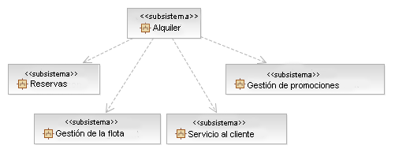
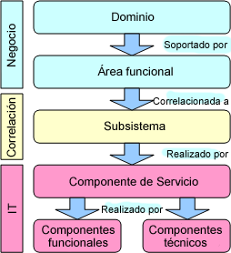
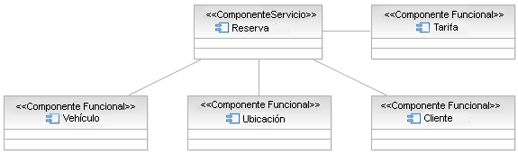
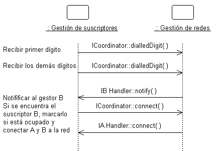
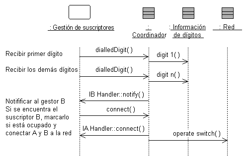
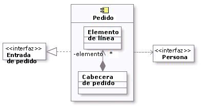
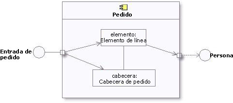

|
Documentar origen de subsistema
Durante la Tarea: Análisis de áreas funcionales identificamos un conjunto de subsistemas
que se corresponden con la entrada recibida de una correlación empresarial de componentes (consulte Concepto: Modelado empresarial de componentes). Durante la descomposición de
procesos, los nodos de actividad de nivel inferior identificados (Concepto: Descomposición de procesos empresariales) se pueden colocar en los
subsistemas como las operaciones o los servicios que el subsistema, como fachada, proporcionará. La funcionalidad de
estas operaciones será ejecutada por los componentes funcionales del componente de servicio. Igualmente, puede elegir
agrupar esta operaciones en interfaces ofrecidas por el subsistema. Los requisitos no funcionales de
operación se utilizarán para extraer los servicios y componentes técnicos necesarios dentro del subsistema.
Es importante que la relación entre estos subsistemas identificados y su origen se mantengan en su sitio. En casos
en los que tanto los productos de trabajo de nivel empresarial como de modelo de servicio estén en UML, la información
de dependencia podrá fácilmente almacenarse en los modelos; en caso contrario, dicha información debería almacenarse en
la Plantilla: Modelo de servicio en Word o mantenerse en un producto de trabajo
asociado.
Consideraciones sobre ISV: Los servicios se pueden ejecutar a través de subsistemas existentes como aplicaciones
personalizadas, paquetes de software y/o proveedores de software independientes. Como se explica en la siguiente
sección, en algunos casos, la identificación de nuevos subsistemas puede entrañar la agrupación física de servicios
basados en criterios como la afinidad de los datos, el coste, el rendimiento, etc., aunque la identificación de
subsistemas se hace normalmente de arriba a abajo durante la actividad Análisis de áreas funcionales. La asignación de
los componentes a los niveles de arquitectura, para satisfacer las restricciones arquitectónicas impuestas por
requisitos no funcionales, se explica en Realización de servicio.
Ejemplo
Los resultados del análisis de áreas funcionales para una agencia de alquiler de ejemplo era la siguiente tabla:
|
Dominio
|
Área funcional
|
Subsistema
|
Descripción
|
|
Marketing y gestión de clientes
|
Servicio al cliente
|
Servicio al cliente
|
Proporciona todas las funciones automáticas para el área funcional.
|
|
Productos
|
Gestión de promociones
|
Gestión de promociones
|
Proporciona todas las funciones automáticas para el área funcional.
|
|
Logística de flota de alquileres
|
Gestión de flota
|
Gestión de flota
|
Proporciona todas las funciones automáticas para el área funcional.
|
|
Gestión de alquileres
|
Alquiler
|
Alquiler
|
Proporciona todas las funciones automáticas para el área funcional.
|
|
Gestión de alquileres
|
Reservas
|
Reservas
|
Proporciona todas las funciones automáticas para el área funcional.
|
|
Gestión de alquileres
|
Determinación de precios
|
Determinación de precios
|
Proporciona todas las funciones automáticas para el área funcional.
|
El modelo de UML resultante de los subsistemas identificados anteriormente sería el siguiente. Observe que las
dependencias de subsistema ya se proporcionan en el modelo mostrado a continuación.

Para cada subsistema los detalles descritos por el Artefacto: Diseño de subsistema deberían documentarse, o podrían
capturarse en el modelo de servicio de formato de documento (consulte Plantilla: Modelo de servicio en Word), de forma similar a lo siguiente.
|
Nombre
|
Reserva
|
|
Descripción
|
El subsistema Reserva se utiliza para crear y gestionar reservas de alquiler de coches.
|
|
Interfaces
|
-
Reservar vehículo
-
Modificar reserva
-
Obtener información sobre opciones
-
Confirmar contrato de alquiler
-
Localizar reserva
-
Cancelar reserva
|
|
Funciones
|
-
Reservar vehículo
-
Modificar reserva
-
Obtener información sobre opciones
-
Confirmar contrato de alquiler
-
Localizar reserva
-
Cancelar reserva
|
|
Dependencias
|
Ninguna
|
|
Requisitos no funcionales
|
Ninguno
|
|
Identificar y aplicar patrones de componentes de servicio
En la Directriz: Patrones de componentes de servicio presentamos no sólo los
distintos tipos de componentes que se utilizan normalmente para implementar los subsistemas identificados
durante esta tarea sino también un conjunto de patrones que permiten implementaciones escalables y flexibles
de estos subsistemas. Los patrones, y por supuesto los patrones adicionales, existen (éste no es un conjunto completo)
y se pueden especificar como parte de la arquitectura de un proyecto.
La selección de, o la personalización de, un determinado patrón dependerá de:
-
Los requisitos funcionales y no funcionales de la solución y el subsistema específico.
-
Las funciones y calidades de servicio suministradas por cualquier middleware sobre el que se desplieguen los
componentes.
-
El equilibrio coste/complejidad y beneficio entre distintos patrones.
|
Identificar componente de servicio
Los subsistemas, en y de sí mismos, no son activos de TI y no son desplegables en la infraestructura de TI; ofrecen un
puente entre las perspectivas empresariales y las de TI. Cada subsistema es ejecutado por uno o más componentes de
servicio en los que un componente de servicio es un activo a escala de empresa (un elemento de software gestionado
con disponibilidad, equilibrio de la carga, seguridad, rendimiento y mantenimiento de versiones garantizados). El
componente de servicio es a su vez ejecutado por varios componentes técnicos y funcionales en función del siguiente
diagrama.

Normalmente, cada servicio asignado a un subsistema producirá un componente de servicio; los componentes funcionales y
técnicos pueden compartirse entre componentes de servicio del mismo subsistema.
|
Identificar componentes funcionales
Los componentes funcionales proporcionan función empresarial adicional a un componente de servicio; en muchos sentidos,
la función suministrada por un componente de servicio depende completamente de sus componentes funcionales y de la
lógica empresarial adicional que implementa encima de éstos.
Los componentes funcionales a menudo se encuentran entre gestiones de tipo (componentes que gestionan un determinado
elemento de dominio, por ejemplo, "Vehículo", "Cliente", "Planificación", etc.). Debería quedar claro que estos
elementos de dominio son muy frecuentemente gráficos detallados de datos en lugar de simples estructuras.
Ejemplo
Teniendo en cuenta el ejemplo de Alquiler de coche, el componente de servicio Reserva debería reunir detalles sobre el
cliente, la ubicación desde la que desean alquilar y los vehículos disponibles para la clase especificada. También
necesitamos poder determinar las tarifas del cliente, de modo que podamos proporcionar el nivel correcto de servicio en
caso de problemas como, por ejemplo, vehículos no disponibles. El siguiente diagrama muestra el modelo de componente
para Reserva.

|
Identificar componentes técnicos
Los componentes técnicos o de infraestructura sirven para volver disponibles funciones de plataforma horizontal; es
decir, las funciones que proporcionan no son específicas del dominio empresarial pero trascienden los dominios
empresariales. Estos servicios técnicos son suministrados frecuentemente por productos de middleware que incluyen
sistemas operativos y que son utilizados directamente por el componente de servicio o por los componentes funcionales
de los que dependen.
Ejemplo
Al completar el modelo de componente Alquiler de coche (consulte el paso sobre componente funcional de arriba)
incluimos dos componentes técnicos en el modelo, uno para que la Reserva registre la finalización de una solicitud de
reserva y otro para indicar que los componentes Vehículo y Ubicación dependen de los servicios EJB para continuar sus
datos empresariales.

De forma alternativa, podemos utilizar un formato tabular al expresar los componentes necesarios y su relación con los
servicios previamente identificados, tal como se muestra en la siguiente figura.

|
Distribuir el comportamiento del subsistema en los elementos del subsistema
|
Objetivo
|
Especificar el comportamiento interno del subsistema.
Identificar nuevas clases de diseño o nuevos subsistemas de diseño que se necesitan para
satisfacer los requisitos de comportamiento del subsistema.
|
El comportamiento externo de un subsistema viene definido principalmente por las interfaces que realiza. Cuando un
subsistema realiza una interfaz, realiza un compromiso para dar soporte a todas y cada una de las operaciones definidas
por la interfaz. Por su parte, la operación la puede realizar otra operación en un elemento de diseño (es decir, una Clase de diseño o un Subsistema de diseño) que contiene el subsistema; esta operación
puede requerir la colaboración con otros elementos de diseño.
Las colaboraciones de elementos de modelo dentro del subsistema se deben documentar utilizando diagramas de secuencia
que muestran cómo se realiza el comportamiento del subsistema. Cada operación en una interfaz realizada por el
subsistema debe tener uno o varios diagramas de secuencia que la documenten. Este diagrama es propiedad del subsistema
y se utiliza para diseñar el comportamiento interno del subsistema.
Si el comportamiento del subsistema depende mucho del estado y representa una o más hebras de control, las máquinas de
estado son normalmente más útiles para describir el comportamiento del subsistema. Las máquinas de estado en este
contexto se utilizan conjuntamente con clases activas para representar una descomposición de las hebras de control del
sistema (o el subsistema, en este caso), y se describen en diagramas de gráfico de estados. Consulte Directriz: Diagrama de gráfico de estados. En sistemas en
tiempo real, el comportamiento de Producto de
trabajo: Cápsulas también se describe utilizando máquinas de estado. Dentro del
subsistema, pueden existir hebras de ejecución independientes, representadas por clases activas.
En sistemas en tiempo real, se utilizarán Producto de
trabajo: Cápsulas para encapsular estas hebras.
Ejemplo:
La colaboración de subsistemas para ejecutar un comportamiento necesario del sistema se puede expresar utilizando
diagramas de secuencia:

Este diagrama muestra cómo se utilizan las interfaces de los subsistemas para ejecutar un caso de ejemplo. En concreto,
para el subsistema Gestión de redes, se muestran las interfaces específicas (ICoordinator en este caso) y las
operaciones a las que debe dar soporte el subsistema. También se puede ver que el subsistema NetworkHandling depende de
las interfaces IBHandler y IAHandler.
Si miramos dentro del subsistema, vemos cómo se realiza la interfaz ICoordinator:

La clase Coordinador actúa como "proxy" para la interfaz ICoordinator, manejando las operaciones de la interfaz y
coordinando el comportamiento de la misma.
Este diagrama de secuencia "interno" muestra exactamente qué clases proporcionan la interfaz, qué debe ocurrir
internamente para proporcionar la funcionalidad del subsistema y qué clases envían mensajes fuera desde el subsistema.
El diagrama aclara el diseño interno y es fundamental para los subsistemas con diseños internos complejos. También
permite entender fácilmente el comportamiento del subsistema, para que con suerte se pueda reutilizar en otros
contextos.
La creación de estos diagramas de "realización de interfaces" puede ser necesaria para crear nuevas clases y
subsistemas que ejecuten el comportamiento deseado. El proceso es parecido al definido en el análisis de guiones de
uso, pero en lugar con de guiones de uso se trabaja con operaciones de interfaz. Para cada operación de interfaz,
identifique las clases (o en aquellos casos en los que el comportamiento sea complejo, un subsistema contenido) dentro
del subsistema actual que son necesarias para ejecutar la operación. Cree nuevas clases/subsistemas allí donde las
clases/subsistemas existentes no puedan proporcionar el comportamiento necesario (pero pruebe primero la
reutilización).
La creación de nuevos elementos de diseño obliga a la reconsideración del contenido y el límite del subsistema. Evite
tener la misma clase en dos subsistemas diferentes. La existencia de una clase de este tipo implica que los límites del
subsistema no están bien dibujados. Revisite periódicamente la Tarea:
Identificar elementos de diseño para volver a equilibrar las responsabilidades del subsistema.
A veces es útil crear dos modelos internos del subsistema independientes: una especificación destinada al cliente del
subsistema y una realización destinada a los implementadores. La especificación puede incluir clases y colaboraciones
"ideales" para describir el comportamiento del subsistema en términos de clases y colaboraciones ideales. Por otra
parte, la realización concuerda más con la implementación y puede evolucionar hasta convertirse en la implementación.
Para obtener más información sobre la especificación y la realización del subsistema de diseño, consulte Directriz del producto de trabajo: Subsistema de diseño, Especificación y realización
del subsistema.
|
Documentar los elementos del subsistema
|
Objetivo
|
Documentar la estructura interna del subsistema.
|
Para documentar la estructura interna del subsistema, cree uno o varios diagramas de clase donde se muestren los
elementos contenidos por el subsistema y las asociaciones entre ellos. Un diagrama de clase será suficiente, pero se
pueden utilizar más para reducir la complejidad y aumentar la legibilidad.
A continuación se muestra un diagrama de clase de ejemplo:

Ejemplo de diagrama de clase de un sistema de entrada de pedido.
Modelado como un componente, el contenido interno de un subsistema se puede representar alternativamente dentro del
rectángulo de componente en un diagrama de componentes. Esta representación también permite incluir los puntos de
interacción de este subsistema en otras partes del sistema, lo que se realiza a través de sus interfaces.
A continuación se muestra un ejemplo de diagrama de componentes, donde aparece el subsistema de pedido, su contenido
inicial, así como las interfaces proporcionadas y necesarias.

Ejemplo de diagrama de componentes del subsistema de pedido
Como un componente es una clase
estructurada, se puede encapsular firmemente forzando las comunicaciones desde fuera para que pasen a través de los
puertos que obedecen a las interfaces declaradas, lo que otorga una precisión adicional en la especificación y la
interconexión para dicho componente. Esta representación permite "conectar" instancias de partes diferentes mediante
conectores que jueguen un papel específico en la implementación del componente (consulte Concepto: Clase estructurada para obtener información adicional).
A continuación, se muestra un ejemplo de diagrama de estructura compuesta para el subsistema de pedido utilizando
interfaces y puertos.

Ejemplo de diagrama de estructura compuesta del subsistema de pedido
Asimismo, será necesario un diagrama de gráfico de estados para documentar los posibles estados que puede asumir el
sistema. Consulte Técnica: Diagrama
de gráfico de estados.
La descripción de las clases contenidas en el propio subsistema se realiza en Tarea: Diseño de
clase.
|
Describir dependencias de subsistemas
|
Objetivo
|
Documentar las interfaces de las que depende el subsistema.
|
Cuando un elemento contenido en un subsistema utiliza el comportamiento de un elemento contenido en otro subsistema, se
crea una dependencia entre los subsistemas contenedores. Para aumentar la reutilización y reducir las dependencias de
mantenimiento, deseamos expresar esta relación en términos de dependencia de una determinada Interfaz del subsistema, no del propio subsistema ni del elemento
contenido en el subsistema.
Existen dos motivos para ello:
-
Deseamos poder sustituir un elemento de modelo (incluidos los subsistemas) por otro, siempre que ofrezcan el mismo
comportamiento. Se especifica el comportamiento necesario en términos de interfaces, para que los requisitos de
comportamiento que un elemento de modelo tiene en otro se puedan expresar en términos de interfaces.
-
Deseamos que el diseñador tenga una total libertad para diseñar el comportamiento interno del subsistema,
siempre que proporcione el comportamiento externo correcto. Si un elemento de modelo en un subsistema hace
referencia a un elemento de modelo en otro subsistema, el diseñador ya no tendrá libertad para eliminar ese
elemento de modelo o redistribuir el comportamiento de ese elemento de modelo a otros elementos. Como resultado, el
sistema es más frágil.
Cuando cree dependencias, asegúrese de que no existan dependencias o asociaciones directas entre los elementos de
modelo contenidos por el subsistema y los elementos de modelo contenidos por otros subsistemas. Asimismo, asegúrese de
que no existan dependencias circulares entre los subsistemas y las interfaces; un subsistema no puede realizar una
interfaz y ser dependiente de ella al mismo tiempo.
Las dependencias entre subsistemas, y entre subsistemas y paquetes, se pueden extraer directamente tal como se muestra
a continuación. Cuando se muestra de esta forma, la dependencia indica que un subsistema (Gestión de facturas, por
ejemplo) depende directamente de otro subsistema (Gestión de planificación de pagos).

Ejemplo de capas de subsistema utilizando dependencias directas
Cuando existe la posibilidad de sustitución de un subsistema por otro (donde ambos tienen las mismas interfaces), la
dependencia se puede extraer a una Interfaz realizada por el subsistema, en lugar de al propio
subsistema. Esto permite utilizar cualquier otro elemento de modelo (subsistema o clase) que realice la misma interfaz.
La utilización de dependencias de interfaz permite diseñar infraestructuras flexibles utilizando elementos de diseño
reemplazables.

Ejemplo de capas de subsistema utilizando dependencias indirectas
|
|